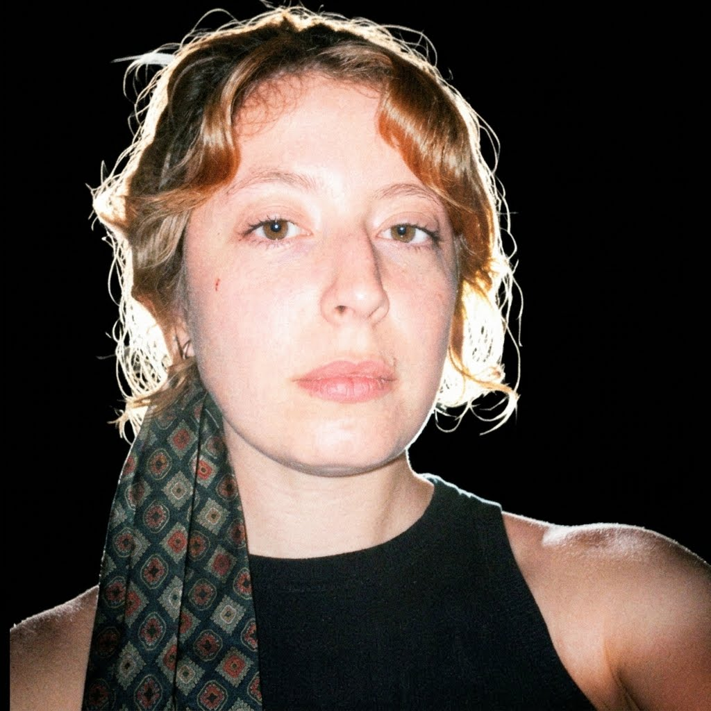

Erica Correia Yabiku

Descrição
Sou designer e motion designer em São Paulo, com background em gestão operacional. Essa experiência me ensinou a liderar equipes, resolver problemas sob pressão e cuidar de cada detalhe da experiência de alguém, e hoje levo isso para a tecnologia e a criação.
Sou formada como Tecnóloga em Desenvolvimento Front-end pela EBAC e sigo estudando UI/UX, produção audiovisual e copywriting na EBAC e no Senac. Hoje meu foco é motion design: animações no After Effects que partem de ilustração, vetores e referências visuais para contar histórias em movimento.
Acredito que design é, antes de tudo, comunicação, e uso a inteligência artificial como ferramenta para expandir o processo criativo.
Idiomas
Português
Nativo
Inglês
Avançado